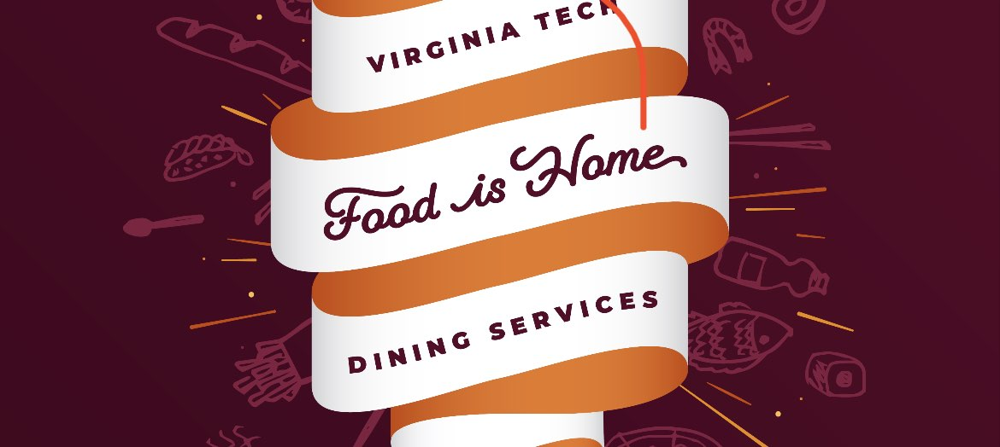

Coding: The Game Beyond the Screen>
My journey of becoming a programmer and developed a love for coding.

The Blacksburg Cuisine Podcast
Ever wonder what the dining halls at Virginia Tech have to offer? Check out this podcast to find out!
Video Project
Video Project placeholder


SWEET CHURROS

90 mins
Making this classic summer treat at home will remind you of a childhood spent in the park.

BERRY PARFAIT
10 mins
This low-calorie, vitamin-packed parfait is great for breakfast, dessert, or post-workout!
SWEET CHURROS
90 mins
Making this classic summer treat at home will remind you of a childhood spent in the park.
BERRY PARFAIT
10 mins
This low-calorie, vitamin-packed parfait is great for breakfast, dessert, or post-workout!